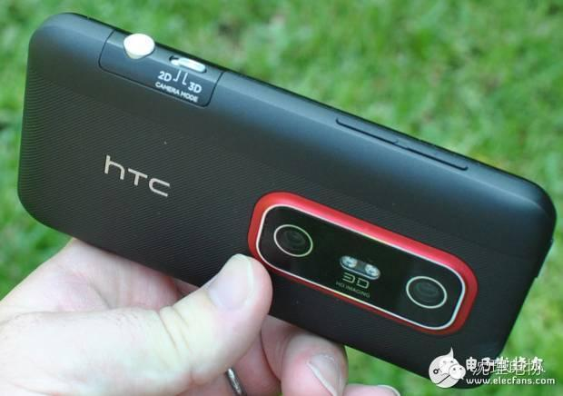
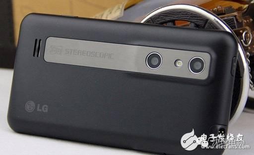
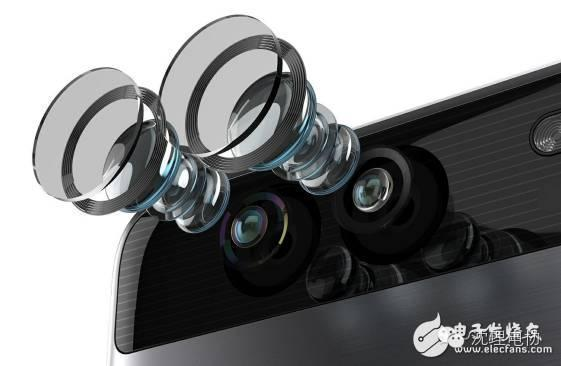
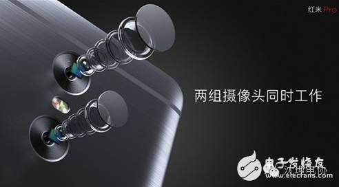
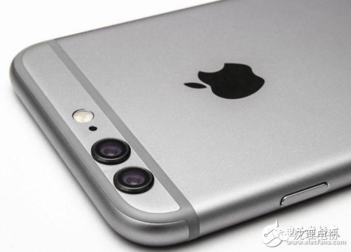
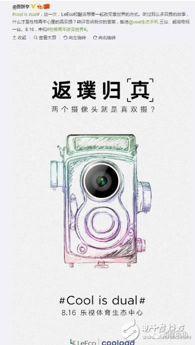

【电协推荐】双摄风云

尽管据传还要近一个月时间上市，但苹果iPhone 7已占尽了风头，据传iPhone 7会有双摄像头（后置，下同）版本的发布，尽管不是苹果首创，但苹果采用的技术，一般都会令拥趸追捧。此外，LG V20、乐视COOL1都已确定将采用双摄像头的方案。为什么选用双摄像头？会不会成为以后手机的标配？对提升照片效果有什么显著效果？


自裸眼3D的双摄像头方案被证实失败后的三年内，各大手机厂商并没有再对双摄像头进行革新，直到2014年，被小米等国产互联网手机厂商挤得地位岌岌可危的HTC，再度拾起双摄像头这一技术。时隔三年后的2014年3月，在HTC One（M8）这一年度旗舰机型上，配置了双摄像头，号称为双镜头3D立体相机。
尽管都是打的3D牌，但此时的双摄像头的成像工作原理已不再是当年的“左眼右眼”，而是一个负责取景，另一个则用于获取景深信息。外观也与前面作品有了巨大的不同，由并列的相同的摄像头变成为了一个主摄像头，一个较小的副摄像头。在成像方面，双摄像头的作用提升很大，M8支持“HTC 360度全景拍摄”，可以清晰呈现360度的全景照片，成像速度快，拍摄难度低，用户可以360度查看拍摄相张。无奈的是，这些照片无法在HTC One（M8）手机以外的电脑或是手机上正常查看。
一年零一个月后，HTC又推出了另一款后置摄像头的HTC One M9+。不过HTC仍未解决在其他设备上查看的问题，这也直接影响了HTC 双摄像头技术的进一步发展。

作为智能手机的新兵，360沿袭了不按常理出牌的互联网企业特性，2015年8月，360手机推出的高端旗舰机360手机旗舰版，配备了双摄像头，尽管是貌似LG Optimus 3D的并排排列，但360手机旗舰版采用的双摄像头，一个是用索尼IMX278彩色传感器，另一个则是用的索尼Mono黑白夜视传感器。
一个来捕捉彩色影像，一个负责细节轮廓，再通过实时计算，将两者综合提升手机的成像画质。这样一来，双摄像头不再是单军作战，而是各有所长，互相补足，这一做法成为了眼下双摄像头手机的主流技术，华为P9、荣耀8、荣耀V8均采用的类似技术。
值得一提的是华为P9，采用的是镜头业界翘楚莱卡SUMMARIT系列镜头，成像质量较好，不过夜景效果一般。


相机成像原理大致相同，利用CMOS感光芯片，记录“光电转换”，将透过手机镜头的光影，通过软件算法进行优化，映射到手机屏幕上，最终记录到手机内存或存储空间中。可以看出，CMOS感光元件和镜头处于成像的前端，负责如实记录，而手机厂商通过软件优化，对传递来的光影数据进行优化。感光元件、镜头、软件优化三者缺一不可，任何一方面有短板，都会造成水桶效应，影响最终体验。
无论是感光元件、镜头还是软件优化，都可以单列出来写一个长篇，本文聚焦于双摄像头，便不再展开。

双摄像头成像，要额外考虑镜头排列、机身稳定、模块组装、图片合成等问题，任何一环出问题，都会直接影响成像结果。不同于手机CPU、屏幕、电池、摄像头之类成熟的上游产业，双摄像头是新技术，并没有成熟的解决方案，还需厂商和上游供应商之类协调优化，需要对图像算法软件进行优化调教，这都是费力不讨好的事，成败参半。综观现有双摄像头手机和解决方案，其实不难发现，双摄像头并没有完成1 + 1 》 2的质量提升，但这并不影响方案公司和厂商对这一技术的持续研发改进。
对于普通消费者，往往不会深究背后是如何实现的，而是把关注点放在实现的效果怎么样上。基于此，我们简单分析一下双摄像头比传统单摄像头的优势。
首先，硬件方面，由单一的感光芯片和镜头变为两个，无论是彩色+黑白的模式，还是标准+广角的模式，都可以对原单一的成像结果进行再度加工，加上合适的软件优化，就能生成理想的照片。尽管现有技术仍有可提高空间，但理想状况下，同材质、软件优化不至少减分的双摄像头必定会优于单一摄像头。
不过由于增加了硬件，售价自然也会有体现，考虑到目前技术仍不完全成熟，如果冲着拍摄效果好来买，那还没有完全的必要。目前双摄像头只能充当锦上添花的作用，还不能完全雪中送炭，代替专业相机，只能用来方便记录一些精彩瞬间。但如何新技术的出现都需要一定时间的发展，双摄像头可能像指纹解锁一样成为下一个手机厂商的突破点。基于此，大家一定对双摄像头这一新概念，必定已是心有中乾坤了吧。
编/高天